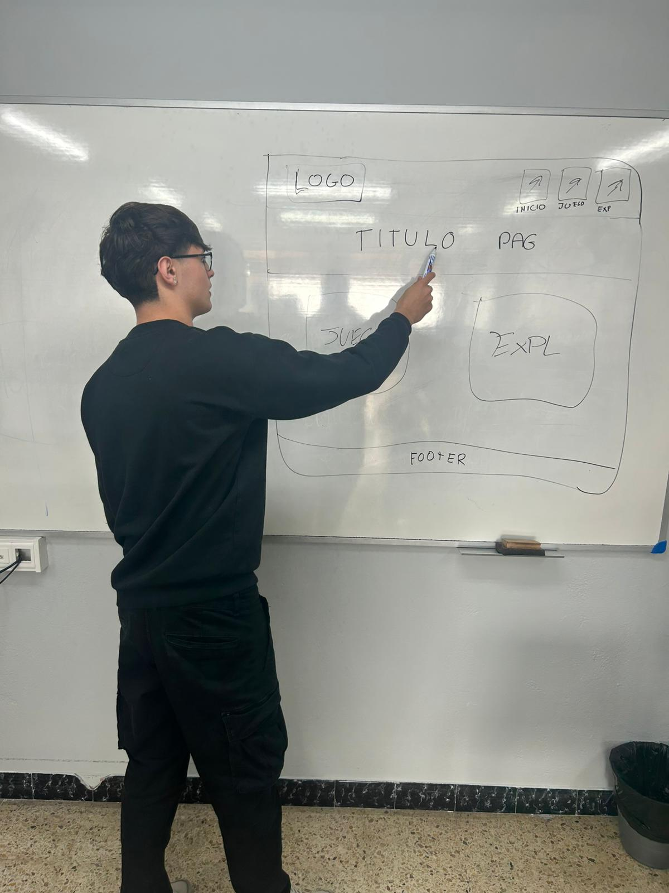
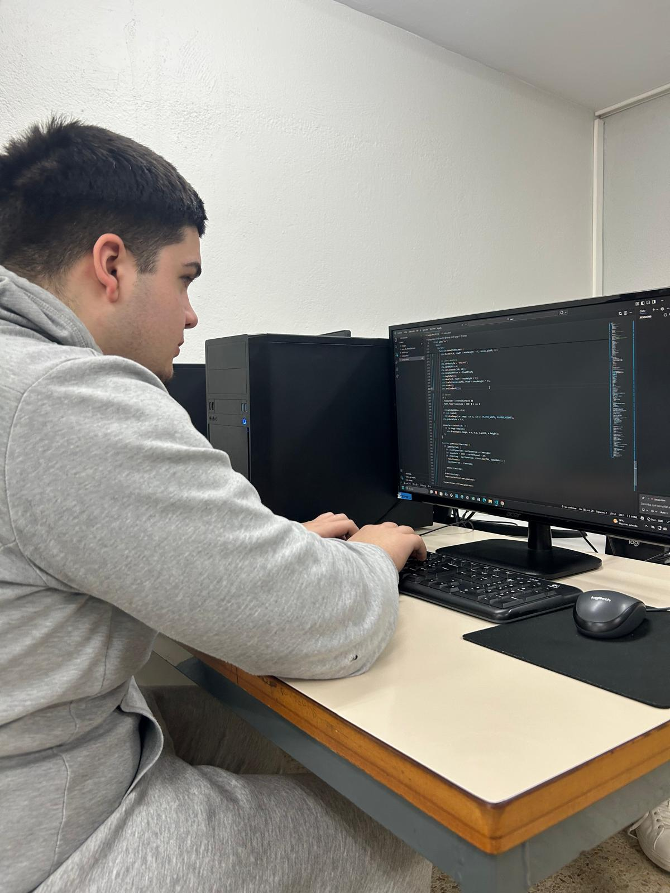
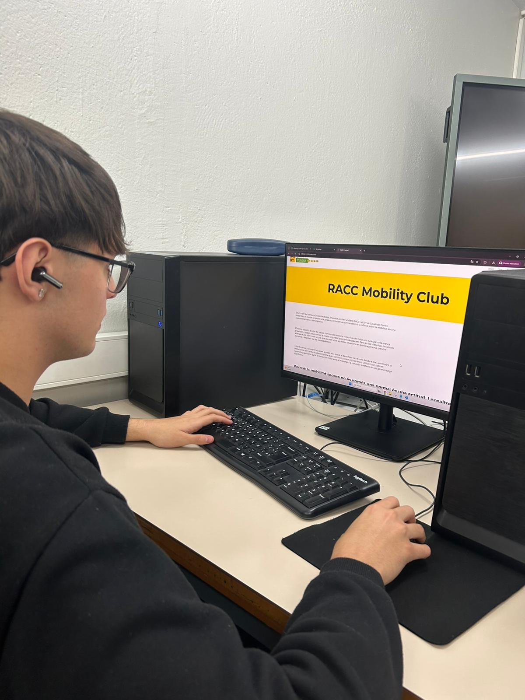
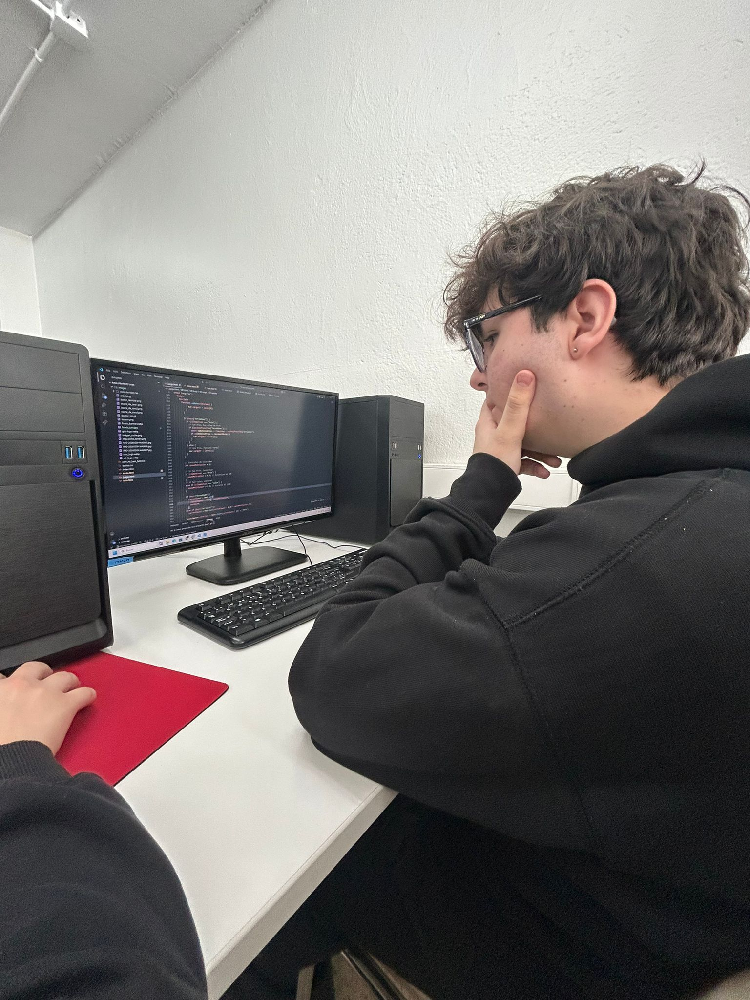
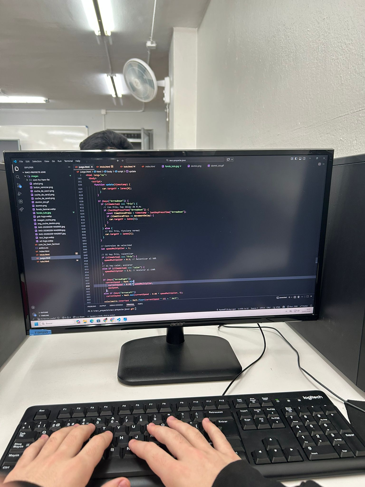
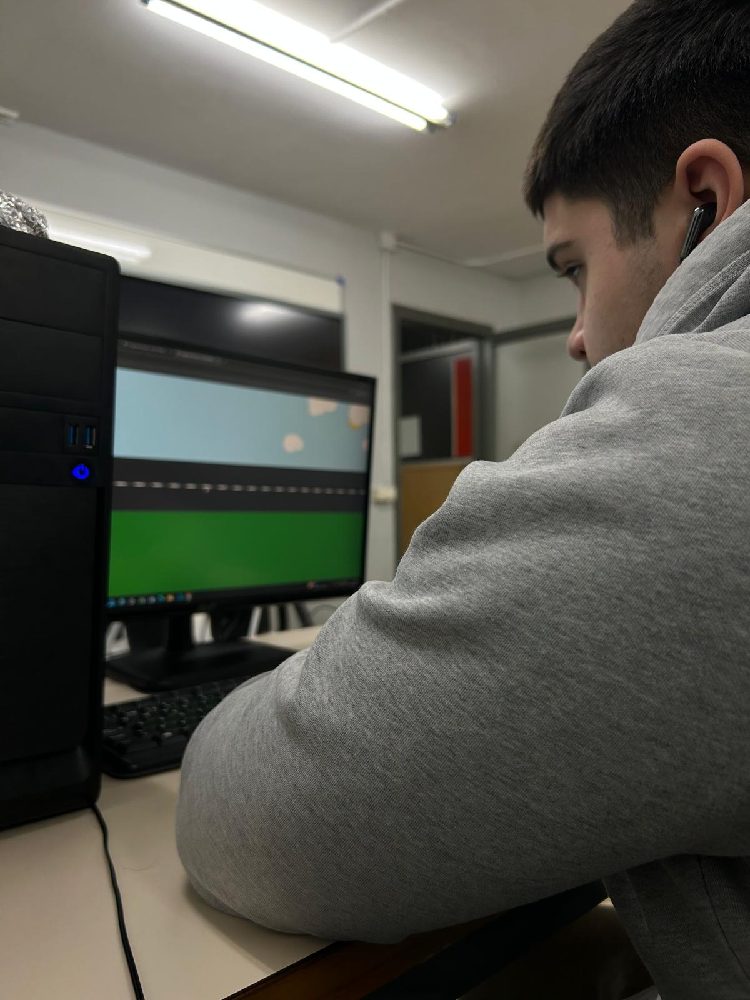
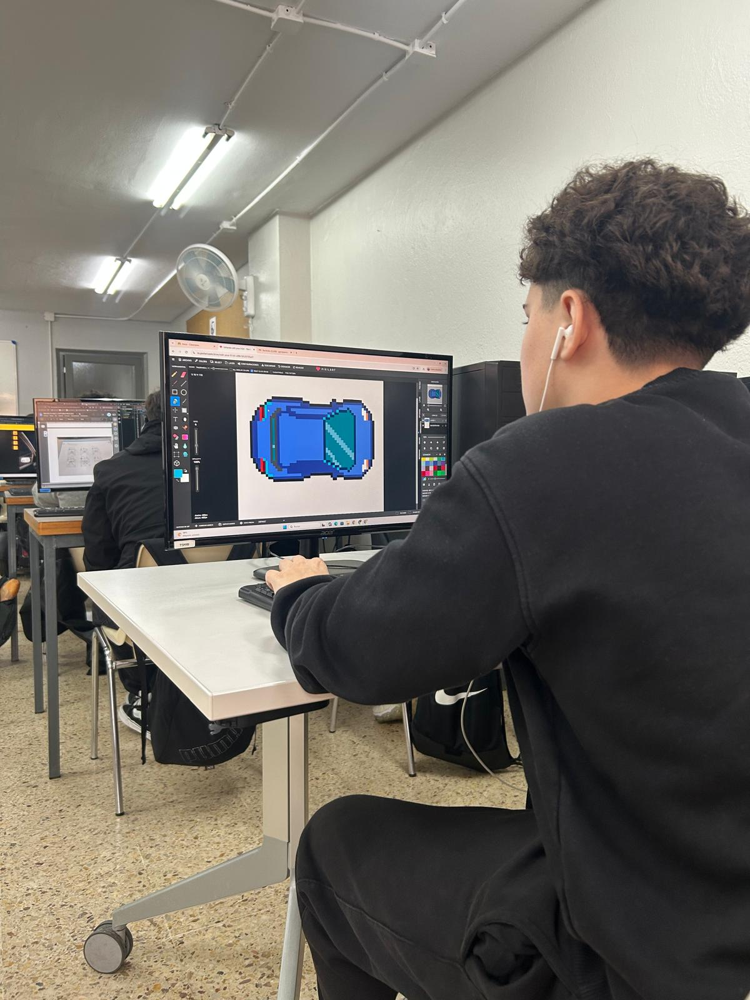
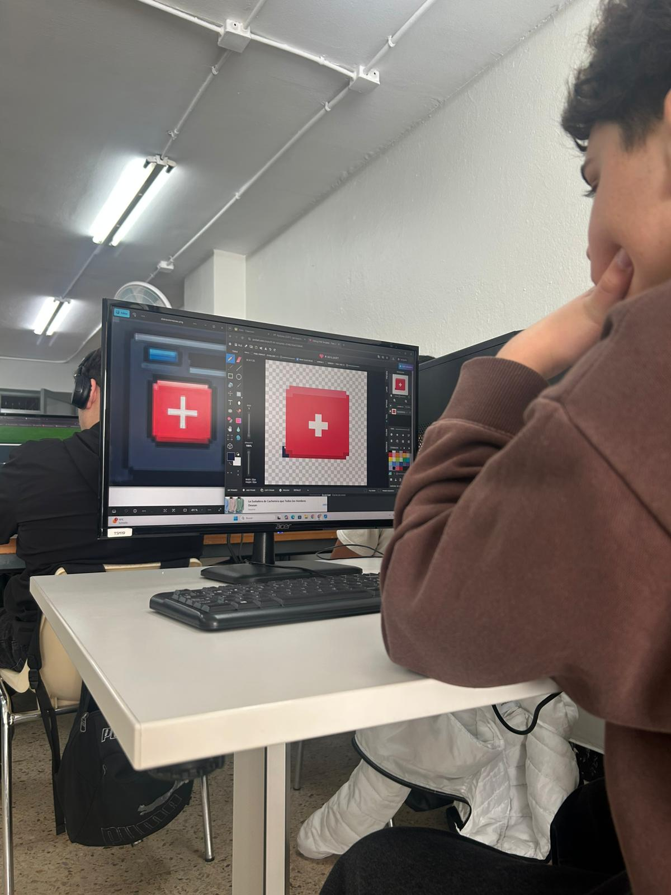
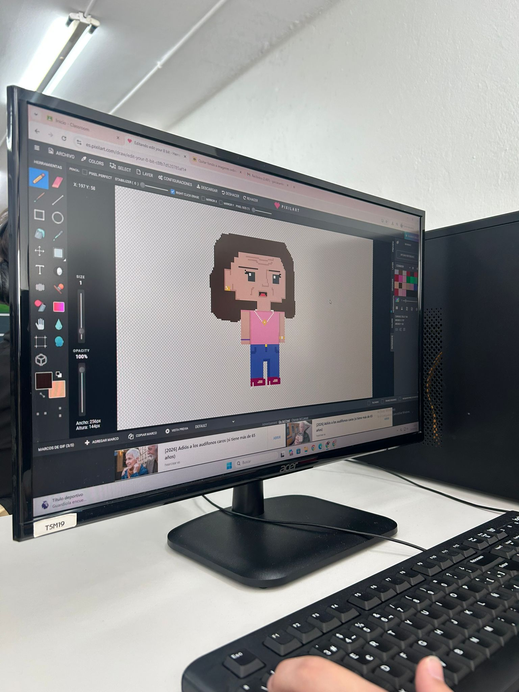
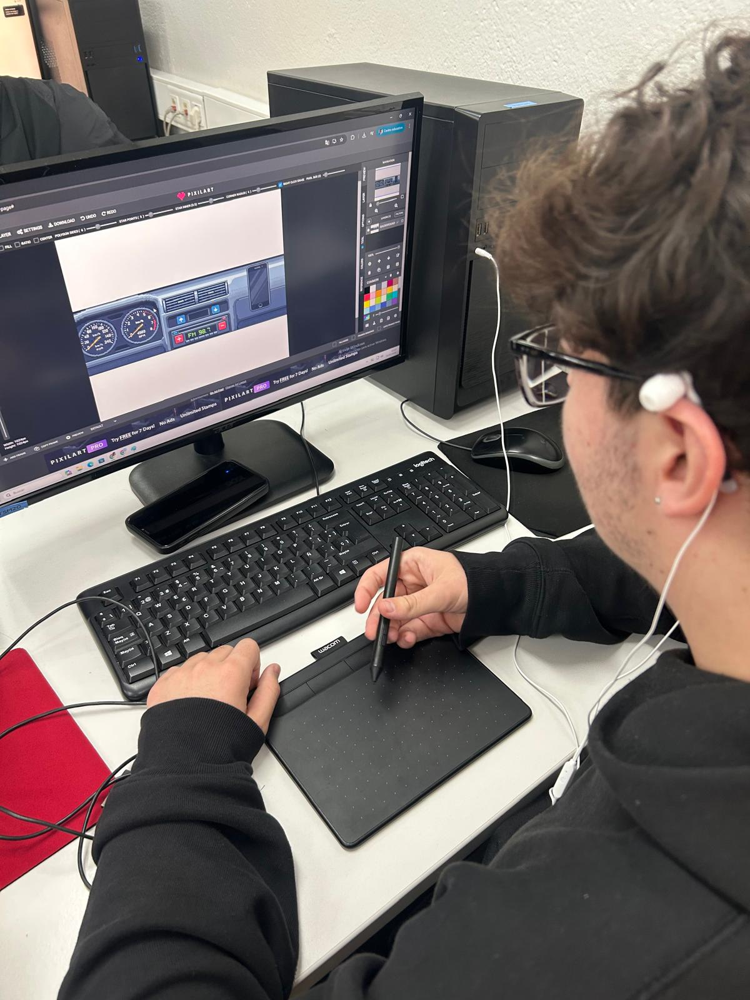

El projecte va néixer de manera orgànica durant una jornada intensa de planificació davant la pissarra. En aquesta sessió inicial, tot l’equip vam posar en comú els diferents projectes i idees que teníem en ment, esbossant esquemes i connectant conceptes de manera visual. Aquest exercici ens va permetre aterrar l'estratègia i definir l’arquitectura principal de la web, transformant una pluja d’idees desordenada en una base sòlida i coherent per a l’experiència d’usuari.
Durant aquest procés col·laboratiu, vam identificar els objectius clau i les funcionalitats essencials que havien de guiar el desenvolupament. Debatre braç a braç sobre la pissarra va ser fonamental per alinear la nostra visió, assegurant que cada secció de la web respongués realment a les necessitats del nostre públic objectiu. El que va començar com un conjunt de traços i notes fets a mà es va convertir en el full de ruta que ha marcat l'èxit del projecte.

Una vegada consolidats els mockups a Figma, vam fer el salt al desenvolupament tècnic per donar vida a la interfície. Utilitzant tecnologies com HTML, CSS i JavaScript, vam començar a programar cada secció de la web, traduint els elements visuals en components interactius i funcionals. Aquest pas va ser crucial per transformar els colors i les tipografies de la identitat del RACC en una estructura digital real, assegurant que el disseny fos completament responsive i adaptable a qualsevol dispositiu.
Durant aquesta fase de programació, vam mantenir un flux de treball iteratiu per polir cada detall de la navegació i l'experiència d'usuari. Ens vam centrar a escriure un codi net i eficient que no només respectés l'estètica definida, sinó que també garantís una càrrega ràpida i una interacció fluida. La coordinació constant entre el disseny i el desenvolupament ens va permetre resoldre reptes tècnics en temps real, aconseguint que el producte final fos fidel a la visió que havíem dibuixat originalment a la pissarra.


Pel que fa al desenvolupament del joc, vam traslladar la lògica que havíem esbossat a la pissarra a un entorn de programació real. Ens vam centrar a crear una mecànica de joc que fos entretinguda però, alhora, totalment integrada en l'ecosistema de la web. Utilitzant JavaScript, vam programar els sistemes de puntuació, les col·lisions i el moviment dels elements, assegurant-nos que la jugabilitat fos fluida i que cada acció de l'usuari tingués una resposta visual immediata i satisfactòria.
Durant aquesta fase, el repte principal va ser equilibrar la dificultat per mantenir l'interès del jugador. Vam dedicar bona part del temps a testejar i ajustar la velocitat i els reptes del joc, integrant els elements gràfics de la identitat del RACC perquè el joc no se sentís com un afegit, sinó com una part fonamental de l'experiència. El resultat va ser un component interactiu que no només diverteix, sinó que reforça el caràcter dinàmic i innovador de tot el projecte.



Per dotar el joc d'una identitat visual única, vam optar per la tècnica del Pixel Art, buscant una estètica retro que evoca els grans clàssics dels videojocs. Aquesta decisió no va ser només una qüestió de nostalgia, sinó una aposta per un estil visual net i carismàtic que permetés destacar els elements clau de la pantalla. Vam dissenyar cada personatge, obstacle i escenari píxel a píxel, posant especial atenció als detalls per garantir que, malgrat la seva simplicitat formal, cada element fos fàcilment reconeixible i tingués personalitat pròpia.
El procés va incloure la creació d'una paleta de colors restringida i harmonitzada, basada en els tons corporatius del RACC, per assegurar la coherència visual amb la resta de la web. Aquesta tria cromàtica ens va permetre unificar tot el conjunt, des dels fons fins a les animacions, aconseguint que el joc se sentís com una peça integrada i no com un element aïllat. El resultat és un apartat visual que combina l'encant de l'estil vuitcentista amb una execució moderna i fluida, reforçant el caràcter lúdic del projecte.



